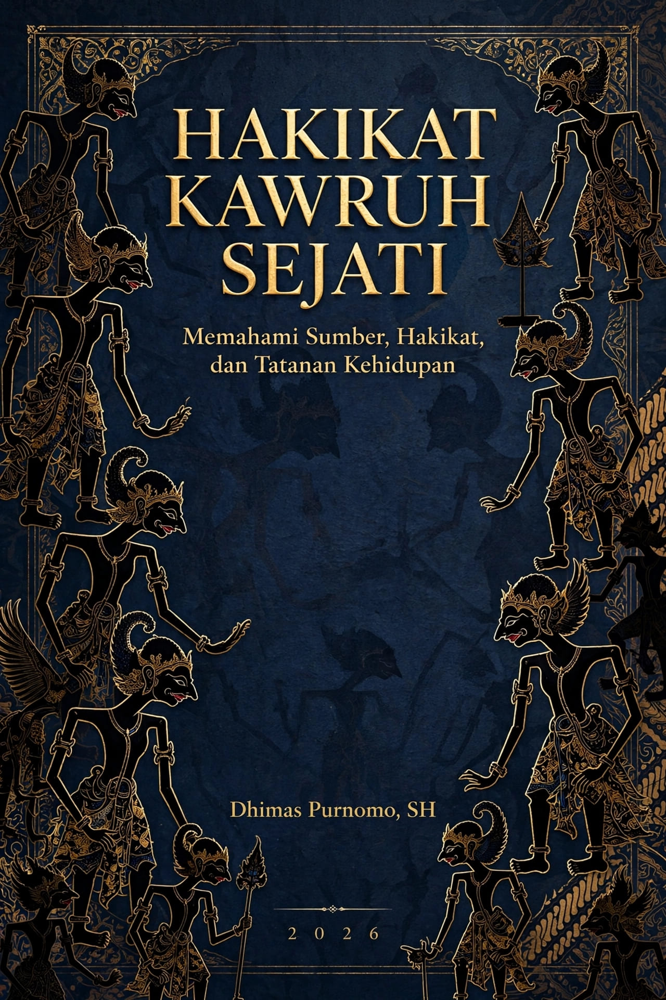

HAKIKAT KAWRUH SEJATI
Tentang Buku
HAKIKAT KAWRUH SEJATI, Memahami Sumber, Hakikat, dan Tatanan Kehidupan merupakan pemaparan mengenai Kawruh Sejati sebagai pepadhang yang bersumber dari Prabhawaning Panguripan untuk mengenali Kasunyatan Hakiki dan memahami Tatananing Panguripan.
Buku ini berangkat dari pemahaman bahwa kehidupan tidak hanya dapat dikenali melalui bentuk lahiriah dan berbagai peristiwa yang dialami manusia, tetapi juga perlu dipahami melalui asal, daya, hakikat, dan keteraturan yang melandasi keberadaan panguripan.